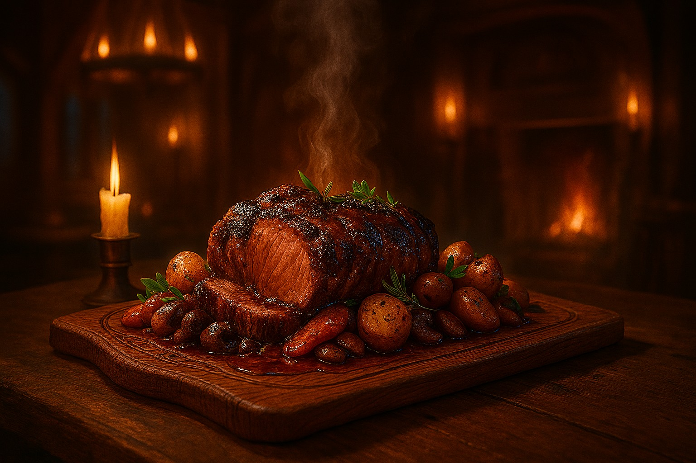
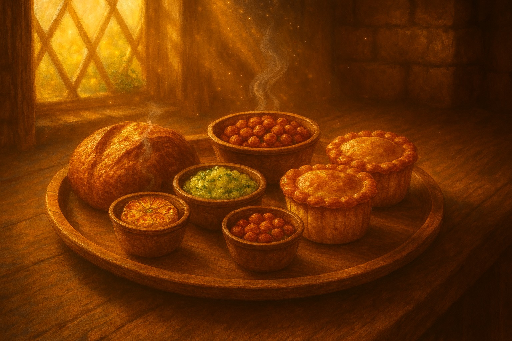
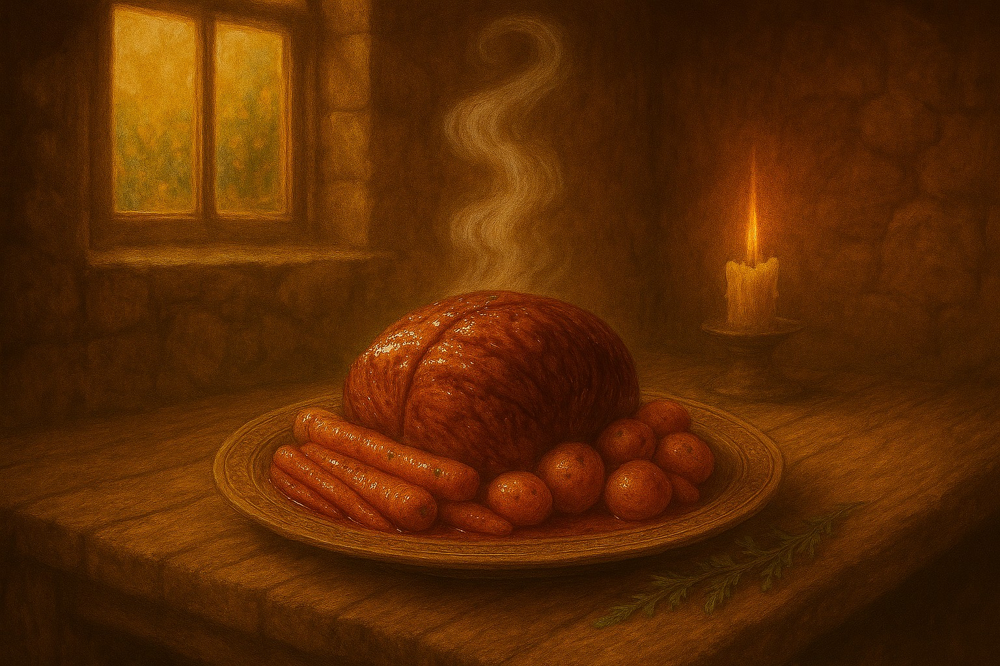
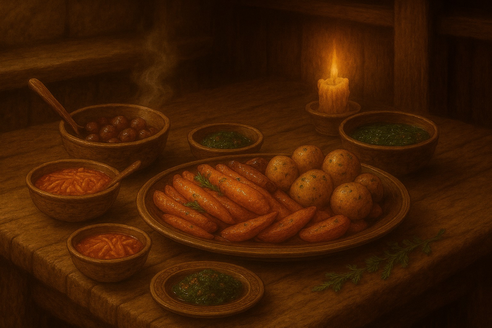
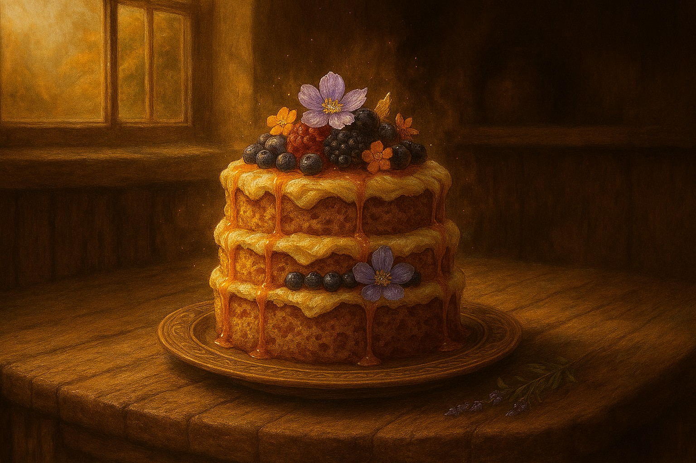
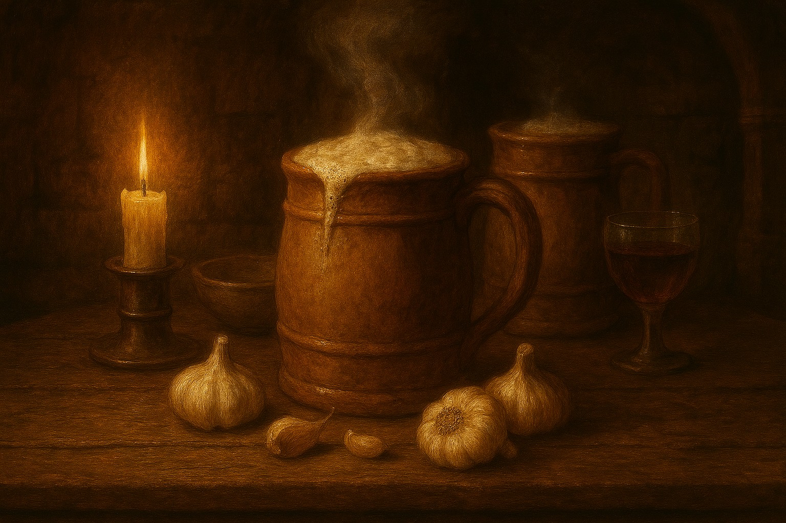

The Roadwarden’s Roast
A generous cut of slow‑roasted beef glazed with garlic and herbs, served with hearth‑roasted potatoes and root vegetables in rich pan jus.
Explore tavern favourites, seasonal delights and beloved drinks prepared for adventurers who crave good food and welcoming company.

A generous cut of slow‑roasted beef glazed with garlic and herbs, served with hearth‑roasted potatoes and root vegetables in rich pan jus.
Fire‑roasted meats and seasonal vegetables arranged for sharing, cooked low and steady to sustain travellers bound for long roads.
A rotating selection of tavern favourites drawn from local fare — roast cuts, hand pies, and vegetables — served as the house sees fit.

Warm bread, hand pies, pickled vegetables, and savoury bites, served for sharing or quiet arrival.
A daily broth prepared from available vegetables and bones, served with coarse bread and butter.
Two baked pies filled with meat or spiced vegetables, eaten easily with one hand and no ceremony.

A thick slice of open‑flame beef, basted with herbs and served alongside potatoes cooked in rendered fat.
House sausages browned over the hearth, served with carrots, onions, and a ladle of savoury gravy.
A slow‑simmered stew of seasonal root vegetables and herbs, thickened with barley and served steaming hot.

Wilted greens dressed simply with butter and cracked pepper.
Roasted until crisp and finished with herbs and coarse salt.
Carrots and seasonal roots cooked in honey and butter until tender.

Golden sponge layered with soft cream, soaked in warm honey and topped with forest berries.
A small baked tart filled with spiced fruit and nuts, served warm from the oven.
Fresh‑baked bread drizzled with honey and served with lightly whipped cream.

House‑brewed ale, mulled wine, or spiced broth, served hot or cold depending on season.
A deep, warming red wine carried along southern trade routes and traditionally served with a clove of raw garlic — a Marchlands custom believed to ward illness and steady travellers before the road ahead.
Dark, malty ale brewed for steady drinking by firelight.
Our kitchens handle a wide range of ingredients. While care is taken in preparation, dishes may contain or come into contact with common allergens. Guests with dietary requirements or allergies are encouraged to speak with tavern staff before ordering.
Menus at the Wayfarer’s Rest reflect the land and the season. Offerings may vary by location across the Marchlands, shaped by local produce, climate, and the conditions of the road.